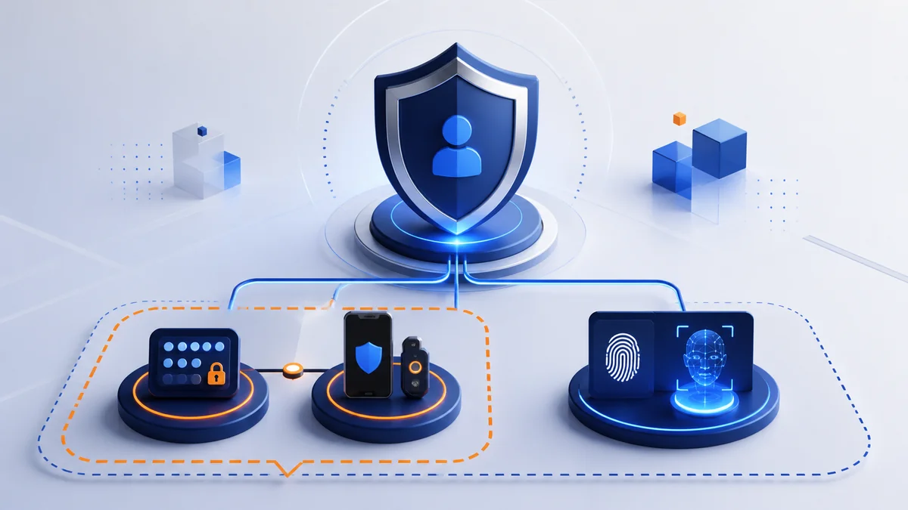
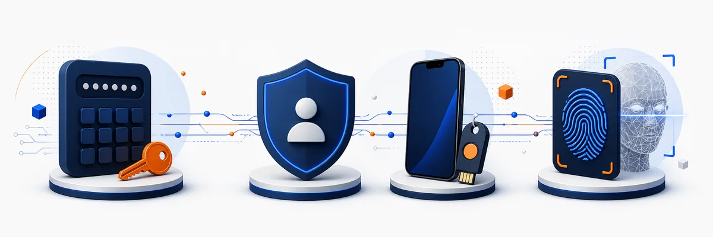
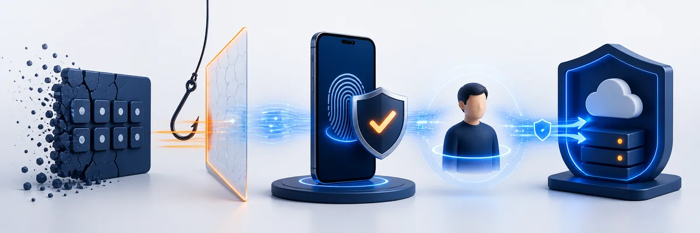
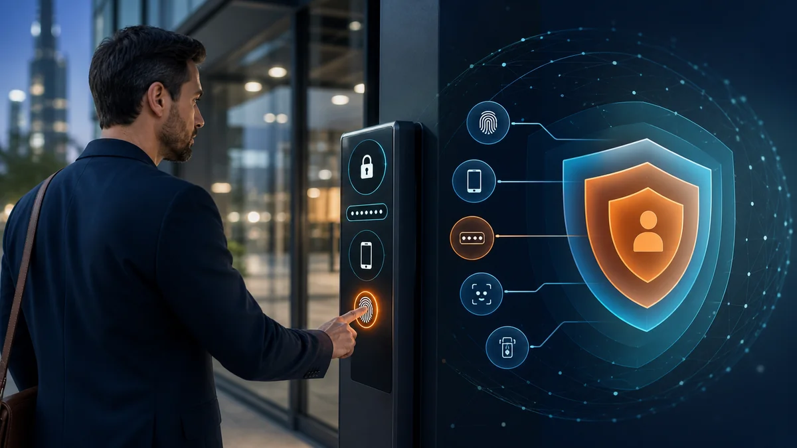

For years, Two-Factor Authentication (2FA) has been considered the gold standard for protecting online accounts. Today, however, cybercriminals have evolved. Phishing kits, credential theft, SIM swapping, MFA fatigue attacks, and man-in-the-middle (MitM) attacks have changed the cybersecurity landscape.
As a result, organizations are asking a more important question:
Is 2FA enough, or should we be thinking about MFA?
The answer begins with understanding what an authentication factor actually is.
What Is an Authentication Factor?

An authentication factor is simply a category of evidence used to prove your identity. Security professionals generally recognize three primary factor types:
1. Something You Know
Knowledge-based authentication relies on information only the user should know.
Examples include:
Passwords
PINs
Security questions
While passwords remain common, they are also the weakest factor because they can be guessed, stolen, phished, or reused across multiple accounts. This is why password-only authentication is no longer considered sufficient for protecting sensitive systems. Microsoft
2. Something You Have
Possession factors verify that you possess a trusted device or object.
Examples include:
Smartphones
Hardware security keys
Smart cards
Authenticator apps
Physical tokens
These factors significantly improve security because an attacker needs physical possession of the device—not just stolen credentials.
3. Something You Are
Biometric authentication uses characteristics unique to the individual.
Examples include:
Fingerprints
Facial recognition
Iris scans
Voice recognition
Modern biometric systems typically include liveness detection and secure hardware, making them one of the strongest authentication factors available when implemented correctly. Microsoft+1
What Is 2FA?
Two-Factor Authentication (2FA) requires exactly two different authentication factors.
A common example is:
Password (something you know)
Authenticator app code (something you have)
or
Password
Fingerprint
The important point is that the two factors must belong to different categories.
Using two passwords is not 2FA.
Using a password plus a PIN is not 2FA.
Those are simply two pieces of knowledge.
What Is MFA®?
Multi-Factor Authentication (MFA) requires two or more independent authentication factors.
This means:
2FA is actually one form of MFA.
MFA is the broader category.
Examples include:
Password + Smartphone
Password + Security Key
Smartphone + Biometrics
Security Key + Biometrics
Password + Smartphone + Biometrics
The last example uses three independent factors, making it stronger than traditional 2FA.
Why the Industry Is Moving Beyond Passwords

The cybersecurity industry has learned one important lesson:
If the first factor is weak, the entire authentication process starts at a disadvantage.
Passwords remain the primary target for attackers because they can be:
Phished
Purchased on the dark web
Reused
Brute forced
Captured by malware
That's why organizations are increasingly adopting passwordless authentication, replacing passwords with stronger possession and biometric factors. Major security vendors and standards bodies now recommend phishing-resistant authentication methods wherever possible. Microsoft+1
Not All MFA Is Created Equal

Many people assume that enabling MFA automatically provides strong protection.
Unfortunately, that's not always true.
Consider these common methods:
Authentication Method | Security Level | Comments |
Password + SMS Code | Moderate | Vulnerable to SIM swapping and phishing. |
Password + Email OTP | Moderate | Email accounts themselves may be compromised. |
Password + Push Notification | Better | Can be abused through "MFA fatigue" attacks if users approve fraudulent prompts. |
Password + Authenticator App | Strong | Widely recommended and more resistant to interception. |
Security Key + Biometrics | Very Strong | Considered phishing-resistant and aligned with modern identity security best practices. Microsoft+1 |
Simply adding another step doesn't automatically make authentication secure. The quality of the factors matters just as much as the number of factors.
Where Passwordless Authentication Fits
Passwordless authentication eliminates the weakest factor altogether.
Instead of asking users to remember passwords, passwordless systems typically combine:
A trusted device
Cryptographic authentication
Biometrics
This approach improves both:
Security
User experience
At Identité®, this philosophy drives the company's PasswordFree® platform. Rather than relying on passwords or SMS codes, PasswordFree® combines trusted devices, biometrics, and its patented Full Duplex Authentication® technology to deliver a phishing-resistant authentication experience designed to reduce friction while strengthening identity verification. The platform is built around passwordless authentication and decentralized verification to help protect against phishing, impersonation, and man-in-the-middle attacks. Identite+1
Choosing the Right Authentication Strategy
When evaluating authentication solutions, organizations should consider more than simply checking the "MFA enabled" box.
Ask questions like:
Does the solution eliminate passwords?
Is it resistant to phishing?
Does it rely on SMS?
Does it use biometrics securely?
Is the user experience simple enough that employees won't try to bypass it?
Can it scale across customers, employees, and partners?
The strongest authentication solutions balance security, usability, and operational efficiency.
The Bottom Line
2FA and MFA are closely related—but they are not identical.
2FA always uses exactly two authentication factors.
MFA uses two or more authentication factors and includes 2FA as a subset.
As cyber threats continue to evolve, organizations are moving beyond passwords toward phishing-resistant, passwordless authentication that combines trusted devices, biometrics, and modern cryptographic verification.
The future of authentication isn't simply adding more factors—it's choosing stronger factors and removing the weakest link altogether. Solutions like Identité®'s PasswordFree® demonstrate how modern MFA can deliver both stronger protection and a simpler user experience by replacing passwords with secure, user-friendly authentication methods built for today's threat landscape. Identite+1